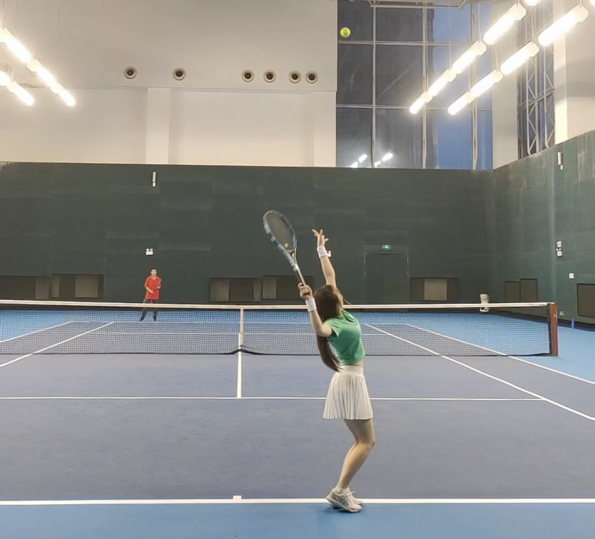

| LIU's Website | ||
| HOME | PORTFOLIO | TRIVIA | ||
| Useful Links |
CONTENTExperience & HobbyI grew up in a small coastal city in China.Through hard work and determination, I was able to enter one of the top universities in my province. After studying there for two years, I decided to continue my academic journey in Japan, and moved here in 2024 to study Information Science. One of my main interests is playing tennis. I started during Primary school and have played continuously since then. Tennis helps me stay fit, focused, and mentally refreshed—especially when balancing studies and daily life in a foreign environment. I usually play singles and doubles matches with classmates on weekends, and it’s a wonderful way to make friends and unwind. I also enjoy creating things on the computer. Building web pages gives me a sense of achievement—seeing a blank screen turn into something interactive and meaningful is very satisfying. Through class projects, I’ve learned how to design layouts and bring ideas to life using code. Studying in Japan has taught me independence, flexibility, and open-mindedness. I look forward to exploring more of Japanese culture, improving my language abilities, and taking on new tech challenges.  |
Contact Me |
| Created in July 2025 | GitHub | ||